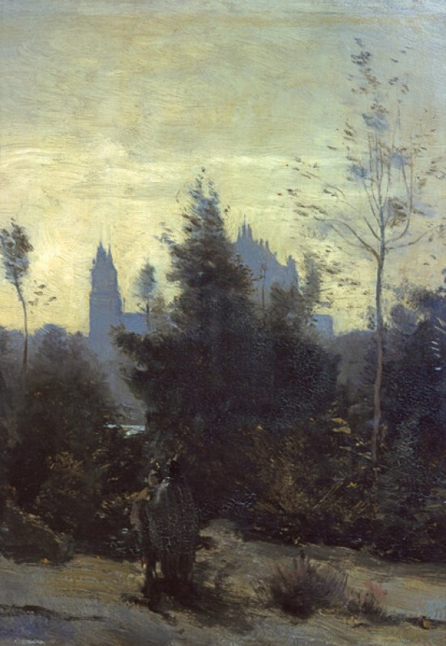

Камиль Коро
Замок Пьерфон
Работы знаменитого французского живописца 19 века Коро также редко встретишь в
русских музеях. Но в Радищевский музей картина попала не случайно. Боголюбов искренне восхищался художником и по
возможности приобретал его работы.Работы Коро ни с чем не спутаешь. Они являются классикой барбизонской школы.
Барбизонцы были предшественниками импрессионистов. Они первыми начали работать на открытом воздухе. Предпочитали
писать пейзажи и сельскую жизнь. Все это импрессионисты у них и позаимствуют. Однако барбизонцы в отличие от
импрессионистов предпочитали сдержанные тона. Вернее они пользовались несколькими тонами одного цвета. В результате
работа получалась чуть ли не монохромной. Такова и картина “Замок Пьерфон”. Импрессионисты, в том числе Клод Моне
и Ренуар будут тяготеть куда к более ярким краскам.Коро изобразил раннее утро. Очертания замка только-только
проступили из темноты. Невероятным образом художник передал свет зарождающегося дня. На переднем плане – два
стражника. Это добавляет в пейзаж сказочности и таинственности. Ведь Коро – художник-поэт. А его
работы называют “пейзажами настроения”.